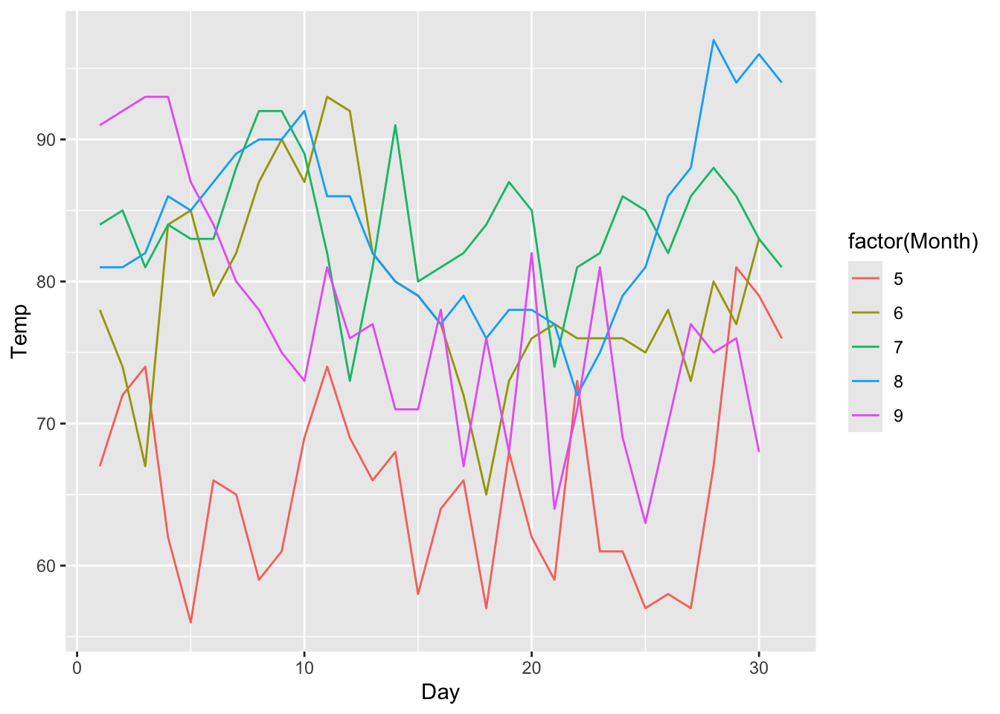

8 Messen
8.1 Lernsteuerung
8.1.1 Lernziele
- Sie können den Begriff “Messen” definieren.
- Sie können den Begriff “Fragebogen” definieren und anhand von Beispielen erläutern.
- Sie können die Messgüte eines bestimmten Fragebogens einschätzen.
- Sie können Beispiele nennen für implizites Messen in der Psychologie.
8.1.2 Position im Lernpfad
Sie befinden sich im Abschnitt “Messinstrumente” in Abbildung 1.2. Behalten Sie Ihren Fortschritt im Projektplan im Blick, s. Abbildung 1.3.
8.1.3 Benötigte R-Pakete und Daten
Vergessen Sie nicht, dass Sie ggf. die Pakete zuerst (einmalig) installieren müssen.
8.2 Was ist Messen?
8.2.1 Operationalisierung
Definition 8.1 (Operationalisierung) Operationalisierung ist der Vorgang des genauen Beschreibens, anhand welcher Operationen ein Konstrukt beobachtbar (im weiteren Sinne) und damit messbar gemacht wird. Da in der Pschologie die Variablen zumeist (per Definition) nicht direkt der Beobachtung zugänglich sind, kommt der Operationalisierung eine wichtige Rolle im Forschungsprozess zu.\(\square\)
Psychologische Variablen, auch als Konstrukte bezeichnet, sind nicht (direkt) messbar, mann muss sie operationalisieren, dann kann sie erst messen, s. Abbildung 8.1.
flowchart LR
subgraph Konstrukt
direction LR
theoretisch
latent
nicht-beobachtbar
end
subgraph Messmodell
direction LR
empirisch
manifest
beobachtbar
end
Konstrukt --> Messmodell
Beispiel 8.1 (Extraversion bei den “Big Five”) Satow (2020) operationalisiert in seinem Instrument B5T die Persönlichkeitsvariable Extraversion anhand von 10 Items, s. Abbildung 8.2. Persönlichkeitsvariable sind Eigenschaften, die zeitlich stabil sind und sich situationsunabhängig auf eine bestimmte Weise im menschlichen Erleben und Verhalten manifestieren. Extraversion beschreibt das Ausmaß, in dem eine Person hohe Aktivität in sozialen Interaktionen und anstrebt. Hoch extravertierte Menschen sind dominant, gesellig, enthusiastisch und abenteuerlustig.\(\square\)
Definition 8.2 (Psychometrische Skala) Eine (psychometrische) Skala ist eine Operationalisierung eines Konstrukts anhand eines psychometrisch geprüften Messmodells. Sie besteht aus mehreren zusammengehörigen Items, vgl. Abbildung 8.2. Den Antworten der Versuchspersonen auf die Items werden Zahlen zugeordnet und über die Items aufsummiert. Häufig werden die Werte einer Skala als intervallskaliert angenommen (Quelle]. Im häufigen Fall eines sog. reflektiven Messmodells geht man davon aus, dass die latente Variable die (einzige) Ursache der Werte (Streuung) in den Items ist.\(\square\)
Beispiel 8.2 (Deutschsprachige Drive for Muscularity Scale (DMS)) Die DMS (Waldorf u. a. 2016) sich als Maß für Muskulösitätsstreben etabliert. Das Instrument besteht aus zwei (korrelierten) Skalen: Muskulatur-bezogene Kognition und Muskulatur-bezogenes Verhalten; der Volltext und weitere Informationen findet sich hier. Jedem der beiden Sckalen sind mehrere Items zugeordnet, s. Abbildung 8.3. Die Zuordnung der Items zur jeweiligen Skala und ihre psychometrischen (statistischen) Eigenschaften definieren das jeweilige Messmodell.\(\square\)
8.2.2 Messen
Definition 8.3 Messen ist das Zuordnen eines empirischen Zusammenhangs in einen Zusammenhang, der in Zahlen ausgedrückt wird und zwar nach “vernünftigen Regeln”, d.h. so, dass sich die empirischen Beziehungen in den numerischen Beziehungen widerspiegeln.\(\square\)
ü뮂Äçüè´ Messen ist das Fundament einer empirischen Wissenschaft.
üßë‚Äçüéì Wer viel misst, misst auch viel Mist!
Eine ausführlichere Darstellung des Messens findet sich z.B. bei Eid, Gollwitzer, und Schmitt (2013).
Ein Beispiel für diese “vernünftigen Regeln” ist:
- Misst man zwei Stöcke A und C, wobei C länger ist als A (\(C \succ A\)), so muss die Zahl, die C zugeordnet wird (\(Z(C)\)) größer sein, als die Zahl, die Stock C zugeordnet wird (\(Z(C)\)): \(C \succ A \Leftrightarrow Z(C) > Z(A)\), s. Abbildung 8.4.

Wenn Stöcke A und B gleich lang sind und zusammen so lang wie Stock C sind, s. Abbildung 8.4, dann muss für die den Stöcken zugeordneten Zahlen \(Z(A), Z(B), Z(C)\) gelten:
- Bedingung der Nominalskala: Gleichheit - \(Z(A) = Z(B)\)
- Bedingung der Nominalskala: Ungleichheit - \(Z(A) \ne Z(C)\)
- Bedingung der Ordinalskala: Rangfolge - \(Z(A) < Z(C), Z(B) < Z(C)\)
- Bedingung der metrischen Skala: Additivität - \(Z(A) + Z(B) = Z(C)\square\)
Das Skalenniveau einer Variable kann nicht vorausgesetzt werden, sondern muss überprüft werden.
Beispiel 8.3 (Messen auf der Nominalskala) Messen auf der Nominalskala kann bedeuten, dass man Frauen die Zahl 1 zuordnet und Männern die Zahl 0, vgl. Abbildung 8.5.\(\square\)
flowchart TD
subgraph ES[Empirisches System]
M1[Mann 1]
M2[Mann 2]
F1[Frau 1]
F2[Frau 2]
F3[Frau 3]
end
subgraph NS[Numerisches System]
Z1[1]
Z0[0]
end
M1 --> Z0
M2 --> Z0
F1 --> Z1
F2 --> Z1
F3 --> Z1
8.2.3 Quiz

Wie “gut” eine Operationalisierung ist, kann man empirisch prüfen. Dafür gibt es einige Kennzahlen, s. Kapitel 8.5.
8.2.4 Metrisches Niveau psychologischer Variablen
Ob psychologische Variablen überhaupt metrisches Nivea aufweisen, insbesondere die Additivität der Ausprägungen, war (und ist) Gegenstand (angeregter) Debatte Joel Michell (2003). Ein Lichtblick ist vielleicht Labovitz (1970), der zeigte, dass eine ordinale Skala mit einer metrischen sehr hoch, \(r>.95\) korreliert ist unter einem breiten Feld von Ausgangsbedingungen. Es scheint also, dass man optimistisch sein darf, dass psychologische Variablen sich (oft) so verhalten als ob sie metrisch wären.
8.3 Fragebogen
8.3.1 Beispiele
8.3.2 Definition
Einen inhatlich psychologisch und methodisch psychologisch (“psychometrisch”) fundierten Fragebogen bezeichnet man auch als (psychologischen) Test1
Definition 8.4 (Psychologischer Test) Ein Test ist ein wissenschaftliches Routineverfahren zur Untersuchung eines oder mehrerer empirisch abgrenzbarer Persönlichkeitsmerkmale mit dem Ziel einer möglichst quantitativen Aussage über den relativen Grad der individuellen Merkmalsausprägung (Lienert und Raatz 1998).\(\square\)
8.3.3 Elemente
Ein (psychologischer) Test besteht aus folgenden Elementen:
- Item: Eine Frage, auf die der Proband antworten soll bzw. die er lösen sollen. Ein Item operationalisiert einen Teilaspekt eines Konstrukts.
- Subtest: Untertest aus mehreren Items eines Tests, die jeweils zu einem gemeinsamen Punktwert zusammengezogen werden.
- Itemantwort: Antwortmöglichkeiten eines Items.
- Skala: Andere Bezeichnung für einen Subtest oder Bezeichnung für einen Gesamttest, wenn dieser nur aus einem einzelnen Punktwert besteht.
- Score: Punktwert eines Probanden aus einem Subtest oder einem Test.
Beispiel 8.4 Item 1 aus der Extraversionskala des B5T (Satow 2020) “Ich bin gerne mit anderen Menschen zusammen.”\(\square\)
Beispiel 8.5 Beispielitem: „Ich bin ein ängstlicher Typ“ (Satow 2020).
Dieses Item hat folgende Itemantwort:
trifft gar nicht zu (1 Punkt)
trifft eher nicht zu (2 Punkte)
trifft eher zu (3 Punkte)
trifft genau zu (4 Punkte)
8.3.4 Antwortformate
Eine Skala hat (fast) immer ein homogenes Itemantformat, d.h. alle Items einer Skala haben i.d.R. das gleiche Antwortformat.
Es gibt viele verschiedene Antwortformate (vgl. Bühner 2011); eine gängige Variante sind Ratingskalen.
Definition 8.5 (Ratingskala und Likertskala) Eine Rating- oder Beurteilungsskala präsentiert der Versuchsperson Items mit einem Antwortformat, bei dem derjenige Punkte bzw. diejenige Antwortoption gewählt werden soll, die der Beurteilung der Versuchsperson am besten entspricht, vgl. Abbildung 8.6. Eine gängige Variante von Ratingskalen sind Likert-Skalen. Items von Likert-Skalen sind Aussagen bei denen die Versuchspersonen den Grad Ihrer Zustimmung bzw. Ablehnung ausdrücken, in einem bipolarem Format also2. Generell gilt, dass höhere Zustimmung zu einem Item der Likert-Skala auf einen höheren Wert im zugrundliegenden Konstrukt geschlossen werden kann.\(\square\)
Quelle: Nicholas Smith, CC BY-SA 3.0
{kind=link}
Gängige Antwortformate in Ratingskalen sind:
- Häufigkeit: z.B. nie – selten – gelegentlich – oft – immer
- Intensität: z.B. gar nicht – wenig – mittelmäßig – überwiegend – völlig
- Bewertung z.B. trifft gar nicht zu – trifft eher nicht zu – trifft eher zu – trifft völlig zu
Man kann Antwortformate dahingehend unterscheiden, ob sie uni- oder bipolar aufgebaut sind:
- unipolar: z.B. nie – selten – gelegentlich – oft – immer
- bipolar: z.B. trifft überhaupt nicht zu (-2) – (-1) – (0) – (+1) – (+2) trifft voll und ganz zu
8.4 Bezugsquellen von Messinstrumenten
üßë‚Äçüéì Wo finde ich Tests? Welche darf ich wie benutzen?
ü뮂Äçüè´ Vielleicht ist die beste Strategie, die Papers zur eigenen Forschungsfrage zu lesen. Dann orientiert man sich (eng) an dem Vorgehen dieser Autoren. Die n√§chstbeste L√∂sung ist, nach Instrumenten zu suchen; hier sind einige Bezugsorte.
8.4.1 Reichhaltige Fundorte
Gesis-ZIS: Hier finden sich eine Anzahl an wissenschaftlich untersuchten Fragebögen, z. B. der BFI-10, ein Kurz-Fragebogen zu den Big Five mit nur 10 Items
Der Psyndex ist ein Verzeichnis der auf Deutsch publizierten Tests (ca. 7000), davon sind einige zum freien Download bei Psyndex enthalten. Andere müssen - genaue wie alle übrige Fachliteratur - über einschlägige Quellen bezogen werden.
Die Hogrefe-Testzentrale ist der bekannteste kommerzielle Anbieter für psychologische Tests in Deutschland.
Viele (deutschsprachige) Tests sind in (deutschsprachigen) Fachzeitschriften (z. B. Diagnostica) publiziert.
Psytoolkit stellt eine Auswahl an über 100 frei nutzbaren psychologischen Skalen bereit (in englischer Sprache).
PsychologyTools stellt eine Auswahl an Skalen, in englischer Sprache, bereit.
Fisher, Matthews, und Gibbons (2016) untersuchen Single-Item-Skalen (also einzelne Items) und präsentieren eine Auswahl an geeigneten Items in Tabelle 9. Die Skalen sind zumeist orientiert an Fragen der Gesundheitspsychologie.
Arabpsychology stellt eine breite Auswahl psychologischer Skalen bereit.
Im Open Test Archive: Repositorium für Open-Access-Tests findet sich eine Aufstellung von 230 Open-Access-Testverfahern in deutscher Sprache.
Creativity and Arts Tasks and Scales: Free for Public Use ist ein Repo bei OSF, das freie psychologische Skalen aus dem Bereich Kreativität bereitstellt.
Social-Personality Psychology Questionnaire Instrument Compendium (QIC) ist eine Sammlung freier Skalen eines US-Professors.
Im Handbook of Management Scales findet sich eine umfangreiche Sammlung an Skalen aus dem Bereich Management-Forschung.
Das Handbook of Marketing Scales: Multi-Item Measures for Marketing and Consumer Behavior Research (Netemeyer, Haws, und Bearden 2011) stellt eine große Auswahl an Skalen für Marketing-Forschung bereit; ein Teil ist (via Google Books) einsehbar.
Bei Researchgate (Facebook für Wissenschaftler), OSF und auf anderen Preprint-Servern sind viele (Preprint-) Paper hochgeladen und kostenlos abrufbar (ggf. Email-Adresse von Hochschule nötig).
Die University of Texas at Arlington UTA stellt eine große Auswahl an Testverfahren bereit.
Mitunter hilft es, die Autoren anzuschreiben.
Kapitel 8.8 stellt eine Zotero-Gruppe mit einer Auswahl an Skalen (v.a. aus dem Bereich Usability) bereit.
Wer in den für die Forschungsfrage einschlägigen Papers stöbert, findet über kurz (oder lang) Ansatzpunkte bzw. Messinstrumente, die sich in anderen Studien bewährt haben. So ist ein Beispiel für Messinstrumente um emotionale Reaktionen von Versuchspersonen auf Werbung in Escalas und Stern (2003) zu finden.
8.4.2 Fallbeispiel Psyndex
PSYNDEX - die Datenbank des ZPID für Publikationsnachweise (…) inklusive redaktionell beschriebener Testinstrumente und Interventionsprogramme.3
So lieferte ein Suche bei Psyndex mit dem Suchterm Usability zu 683 Treffern.[Datum: 2023-05-14]
Die ersten fünf Treffer waren folgende Fachbeiträgen:
- The influence of design aesthetics in usability testing: Effects on user performance and perceived usability4
- Perceived software usability and usability-related stress in German craft enterprises5
- Qualitätssicherung im Usability-Testing - zur Reliabilität eines Klassifikationssystems für Nutzungsprobleme
- Usability von Online-Trainings
- Usability in online shops: scale construction, validation and the influence on the buyers’ intention and decision6
Insgesamt lieferte diese kurze Recherche bereits einen vielversprechenden Einstieg in deutschsprachige Instrumente zur Messung von Usability.
8.4.3 Rechte und Pflichten
üßë‚Äçüéì Welche Tests darf ich wie benutzen?
Kommerzielle Tests müssen von Ihnen käuflich erworben werden oder eine schriftliche Nutzungsgenehmigung durch den Verlag vorliegen, sonst ist die Nutzung nicht erlaubt. Andere, nicht-kommerzielle Tests (z. B. von Gesis) dürfen Sie ohne Rückfrage und ohne Gebühr verwenden. Die Zitationspflicht bleibt davon unberührt.$
8.4.4 Make or buy?
üßë‚Äçüéì Wieso der ganze Stress? Ich denk mir ein paar Fragen aus, und fertig ist der Lack!
üë©‚Äçüè´ Bei nicht-psychologischen Variablen, die einfach zu beboachten sind, so wie z.B. Schuhgr√∂√üe, ist das vollkommen ok. Bei psychologischen Variablen sollte man besser auf gepr√ºfte Qualit√§t zur√ºckgreifen.
Selbst gestrickte (psychologische) Fragebögen sind meist problematisch, man sollte besser auf Instrumente mit geprüfter Qualität zurückgreifen.\(\square\)
Verwenden Sie möglichst keine selbst gestrickten Fragebögen/Items für psychologische Persönlichkeitskonstrukte: Gütekriterien eines Tests aus selbst gestrickten Items sind unbekannt oder fragwürdig. Verwendet man eigene Messinstrumente (z. B. Fragebögen) so ist man für den Nachweise der Güte selber verantwortlich. Bei publizierten Verfahren kann man sich einfacher auf die Ergebnisse des publizierten Berichts berufen. Es ist z. B. fraglich, ob es sinnvoll/„erlaubt“ ist, einen Mittelwert von selbst gestrickten Items zu bilden: Item 1: „Meine Füße fühlen sich groß an“; Item 2: „Die letzten 10 Filme waren echt cool und die nächsten 10 Songs werden halb-cool sein oder spitze“. Was sagt der Mittelwert dieser beiden Items aus? Schwer zu sagen (nichts?!).
Das Item „Ich glaube, ich habe zwei Arme“ wird sehr „leicht“ sein (d.h. hoher Mittelwert); daher wird die Streuung des Items gering sein. Daher wird die Korrelation mit einer anderen Skala gering sein. Das Item hat also kaum Informationswert und ist damit von geringem Wert.
Insgesamt ist die Erstellung eines Fragebogens für ein psychologisches Konstrukt ein aufwändiges Unterfangen. In der Regel ist man besser beraten, ein existierendes Verfahren zu suchen/zu verwenden.
Nicht-psychologische Variablen bzw. beobachtbare Dinge sind viel einfacher zu verwenden; hier sind selbst gestrickte Verfahren id.R. kein Problem (z. B. „Welche Automarke fahren Sie?“, „Wie viele Facebook-Freunde haben Sie?“, „Wie viele Kinder haben Sie?“)
8.4.5 Neue Messinstrumente selber entwickeln
Hier sind Beispiele für Variablen, die einfach zu messen sind, und daher für die Messung keiner besonderen Entwicklung oder Überprüfung bedürfen: Manifeste Variablen wie Körpergröße, Gewicht, Alter, Geschlecht, Herkunftsland.
Wissenstests sind ebenfalls häufig gut selber entwickelbar.
Die Qualität eines neuen, selbstentwickelten Messinstrument ist zu prüfen. Beispielhaft für einen Wissenstest seien folgende naheliegende Fragen genannt, die die Qualität eines Messverfahrens betreffen:
- “Waren die Fragen auch nicht zu schwer? Vielleicht konnte ja niemand, in keiner Gruppe, die Fragen beantworten?”
- “Waren die Fragen auch nicht zu leicht? Vielleicht haben ja alle Versuchspersonen alle Fragen korrekt beantwortet?”
- “Wenn alle Fragen auf ein und dasselbe Wissensgebiet abzielen, so sollten die Fragenantworten korrelieren. Tun sie das? Alle? Wie sehr?”
Letztlich sind an Wissenstest die gleichen Qualitätsanforderungen zu stellen wie an andere Messinstrumentwe auch, s. Kapitel 8.5.
8.4.6 Bestehende Messung übernehmen
Latente Variablen, die also nicht direkt beobachtbar sind, sind schwer zu messen. Psychologische Variablen gehören in der Regel dazu. Daher sollten Sie solche Variablen nicht mit eigenen, selbst entwickelten Instrumenten erheben. Das Problem ist, dass es unklar ist, ob Ihr “Messgerät” funktioniert. Viel besser ist in diesem Fall, auf bestehende Messgeräte zurückzugreifen. Persönlichkeitsvariablen sind typische Beispiele für Variablen, die Sie lieber mit existierenden Messinstrumenten messen.
Wissenstests hingegen kann man so verstehen, dass sie keine latenten Konstrukte messen, sondern “nur” den Inhalt der abgefragten Wissens-Items. Zumindest ist das eine Möglichkeit, sich dem Thema zu nähern. In diesem Fall ist es möglich (d.h. vertretbar), selber einen Wissenstest zu gestalten, und diesen ohne weitere Validierung in der eigenen Studie zu verwenden.
8.4.7 … or translate?
Ein Mittelweg zwischen “Make” (Selber ein neues Instrument entwickeln) und “Buy” (ein existierendes Instrument verwenden) ist “Translate”, also ein Instrument in eine andere Sprache zu übersetzen bzw. für diese neue Sprache anzupassen. Bei Gudmundsson (2009) finden sich Hinweise, zum Übersetzen mit hohen Qualitätsstandards eines Instruments in eine andere Sprache übersetzt.
Für die Zwecke einer Seminararbeit ist es ausreichend, Items (z.B. aus dem Englischen) zu übersetzen (z.B. ins Deutsche) und anhang einer Rückübersetzung die Qualität der Übersetzung zu überprüfen.\(\square\)
8.4.8 Einzelne Items einer Skala entnehmen
Entnimmt man beispielsweise aus einem Extraversionstest ein einzelnen Item, etwa “Ich bin ein Team-Player”, lässt man dabei wesentliche Facetten des Konstrukts außen vor. Denn die weiteren Facetten von Extraversion würden etwa mit den 10 Items wie “Ich kann schnell gute Stimmung verbreiten” oder ” Wenn nichts los ist, langweile ich mich schnell” (Satow 2011).7 Daher ist es problematisch, aus einer Skala nur einen Teil der Items zu entnehmen, um das Konstrukt, auf das die komplette Skala abzielt, zu messen. Entnimmt man nur einen Teil der Items, so ist die Messgüte dieser Adhoc- oder Teilskala unbekannt.
Ein (Behelfs-)Ausweg kann darin bestehen, Studien zu zitieren, die diese Adhoc-Skala verwendet haben, und damit einen Effekt finden konnten.
8.4.9 Tipps wie man ein Messinstrument findet
Anstelle eines Fazits folgt hier eine kurze Zusammenfassung in Form von Tipps, wie man ein geeignetes Messinstrument finden kann:
Nicht immer sind Messinstrumente für Ihren Zweck eigenständig publiziert. Stattdessen sind sie Teil einer Studie. Lesen Sie daher einschlägige Fachartikel und übernehmen Sie die Messmethode der Autoren
Recherchieren Sie bei einschlägigen wissenschaftlichen Suchmaschinen wie Google Scholar, Psyndex oder Elicit nach Instrumenten und Fachartikeln.
Überlegen Sie, ob Sie einen Fragebogen durch Verhaltensbeobachtung ersetzen: Reaktionszeit bei der Wahl einer Alternative, akzeptabler subjektive Kaufpreis, Wissenstest, implizite Verfahren … Solche Maße können Sie (für die Zwecke der Seminararbeit) ohne Prüfung der Validität einsetzen.
8.5 Messgüte
Die Güte einer Messung wird in der Psychologie zumeist anhand dreier Kennzahlen festgemacht:
- Reliabilität (Messgenauigkeit)
- Objektivität (Unabhängigkeit vom Kontext)
- Validität (Gültigkeit)
8.5.1 Reliabilität
Die Reliabilität von psychologischen (quantitativen) Skalen wird häufig über die sog. interne Konsistenz ermittelt.
Es gibt mehrere Formeln zur Schätzung von Konsistenzkoeffizienten Hier sollen nur die am häufigsten verwendete dargestellt werden: Cronbachs Alpha Höhe des Koeffizienten hängt vom Verhältnis der Summe der einzelnen Itemvarianzen (\(\sigma_i^2\)) zur Gesamtvarianz (\(\sigma^2\)) des Tests ab. Zwei denkbare Extrem-Szenarien sind︎ - Itemvarianzen hoch und Itemkovarianzen gering: Cronbach-alpha-Koeffizient niedrig ︎ - Itemvarianzen niedrig und die Itemkovarianzen hoch: Cronbach-alpha-Koeffizient hoch.
Definition 8.6 (Cronbachs Alpha) Cronbachs Alpha ist ein gebräuchliches Maß der Reliabilität einer Skala, genauer der internen Konsistenz (Bühner 2011). Der Kennwert hat einen Wertebereich von 0 bis 1, wobei höhere Werte eine hörere Reliabilität anzeigen. Einfach ausgedrückt kann man den Kennwert als ein Maß der mittleren Korrelation der Items untereinander verstehen. Werte ab .7 werden mitunter als akzeptabel und ab .8 als gut eingeschätzt (Tavakol und Dennick 2011).\(\square\)
In der Regel macht es wenig Sinn, Cronbachs Alpha in der eigenen Stichprobe zu berechnen. Der Grund liegt in der kleineren Stichprobe Ihrer Studie im Vergleich zur Validierungsstichprobe des Messintruments. Würde man diesen (oder jeden beliebigen anderen) Kennwert in einer kleineren anstelle einer größeren Stichprobe berechnen, so erhielte man einen ungenaueren (“verrauschten”) Kennwert.
Eine Ausnahme von dieser Regel ist, wenn Ihre Stichprobe groß ist oder wenn Sie ein bisher ungeprüftes Instrument verwenden.
Eine statistisch aussagekräftigere Variante zu Cronbachs alpha (\(\alpha\)) ist McDonalds Omega (\(\omega\)) (Hayes und Coutts 2020).
In R bietet etwa das Paket psych Möglichkeiten, entsprechende Koeffizienten zu berechnen (mit dem Befehl alpha); s. hier.
8.5.2 Objektivität
Für die Objektivität wird meist keine Kennzahl angegeben. Man geht davon aus, dass die Objektivität hinreichend gegeben ist. Die Beschreibung des Vorgehens während der Datenerhebung kann dazu weiter Aufschluss geben.
8.5.3 Validität
Für die Gültigkeit einer Skala wird oft die Korrelation zu anderen Konstrukten berichtet, die laut Theorie hoch oder gering oder gar nicht mit dem zu untersuchenden Konstrukt korreliert sein soll. Entspricht die beobachtete Korrelation der laut Theorie erwarteten, so ist dies als Beleg für die Validität des Verfahrens zu sehen.
8.6 Weitere Messverfahren
Neben psychometrisch fundierten Messverfahren, die in der Psychologie häufig verwendet werden, gibt es noch eine Fülle weiterer Arten von Messverfahren.
8.6.1 Wissenstest
Bei einem Wissenstest wird - wie in einer Klausur in der Schule - die Richtigkeit einer Antwort geprüft.
8.6.2 Implizites Messen
Zur Messung von sozialpsychologischen oder persönlichkeitspsychologischen Konstrukten wird häufig auf eines von zwei Operationalisierungsarten zurückgegriffen:
- Selbsteinschätzung via (psychometrisch fundiertem) Fragebogen (explizite Messung)
- Leistungstests oft in Form von reaktionszeitbasierten Tests (implizite Messung)
Definition 8.7 (Implizite Messung) Eine Messung eines psychologischen Konstrukts, die erhalten wird, während die zu bewertende Person nicht weiß, dass die Messung stattfindet, die häufig zur Bewertung von Einstellungen, Stereotypen und Emotionen in der sozialen Kognitionsforschung verwendet wird. Typischerweise wird ein implizites Maß als Antwortergebnis eines experimentellen Verfahrens bewertet, bei dem der Teilnehmer mit einer kognitiven Aufgabe beschäftigt ist. Beispielsweise könnte eine Wortstamm-Vervollständigungsaufgabe verwendet werden, um Emotionen implizit zu bewerten, so dass “jo_” vervollständigt werden könnte, um ein positives emotionales Wort (z. B. Joy) oder ein neutrales Wort (z. B. Joggen) zu bilden.8\(\square\)
8.6.2.1 Der Implizite Assoziationstest
Der Implizite Assoziationstest (IAT) (Greenwald und Banaji 1995) ist ein Verfahren zur Messung unbewusster Assoziation zwischen mentalen Repräsentationen von Objekten. Typische Anwendung ist die Messung von Vorurteilen.
8.6.2.2 Fundort für implizite Verfahren
Psytoolkit erlaubt es, psychologische Experimente inkl. Reaktionszeit-Messungen zu entwickeln, kostenlos. Die Studien können direkt über die Plattform online gestellt werden.
Die Reaktionszeitsmessungen müssen mit einer Skriptsprache geschrieben werden, aber es gibt von viele Beispiele (inkl. deren Skripte), die man einfach kopieren kann. Die Experimente können im Browser durchgeführt werden.
Übungsaufgabe 8.1
Wählen Sie ein Instrument zur Messung Reaktionszeit aus der Liste von PsyToolkit.
Probieren Sie das Instrument aus.
-
Erstellen Sie eine Kurzbeschreibung des Instruments:
Name
Beschreibung/Ablauf
Zu messendes Konstrukt
Korrelate
Forschungstand (z.B. Anzahl und Qualität der Befunde zu(un)gunsten des Instruments)
Beispielhafte Hypothese für dieses Instrument
Hinweis auf einen passenden Originalartikel
8.7 Stimuli
Definition 8.8 (Stimulus) Ein Stimulus (Plural: Stimuli) ist ein Objekt oder ein Ereignis für das die Reaktion (einer Versuchsperson) gemessen wird.\(\square\)
Stimuli werden nicht gemessen, sind aber (u.U.) auch Operationalisierungen eines Konstrukts (das ist die Verbindung zu Messungen).
Beispiel 8.6 Im Rahmen einer Studis soll positive Stimmung (in den Versuchspersonen) induziert werden. Dazu werden die Versuchspersonen instruiert, 6 Erlebnisse aufzuschreiben, in denen ihnen etwas gut gelungen ist.\(\square\)
In Beispiel 8.6 dient die Instruktion als Operationalisierung für das Konstrukt “positive Stimmung”.
Beispiele für Stimuli sind Bilder, Töne oder Instruktionen.
8.7.1 Bilder und Töne
Eine in der experimentellen Psychologie häufig eingesetzte Sammlung an Bildern ist der International affective picture system (IAPS) (Lang, Bradley, und Cuthbert 1999) oder, neuer, die Open Affective Standardized Image Set (OASIS) (Kurdi, Lozano, und Banaji 2017). Hier werden Alternativen zum IAPS vorgestellt.
Für Töne gibt es ähnliche Sammlungen Yang u. a. (2018); eine breite Sammlung an Audio-Daten nützlich für psychologische Studien, u.a. mit emotionalem Gehalt, findet sich z.B. hier.
8.7.2 Videos
Videos können eine komfortable Möglichkeit darstellen, um Versuchspersonen zu einem Stimulus zu exponieren.
Übungsaufgabe 8.2 (Empathischer Furhat) Der soziale Roboter Furhat ist gut geeignet, um die Reaktionen von Menschen gegenüber sozialen Robotern zu untersuchen. In einer studentischen Studie haben die Autorinnen, Jana Kahr und Tanja Beck, dies untersucht:
Diese Studie befasst sich mit der Frage, ob ein virtueller sozialer Roboter durch verbal empathisches Verhalten das Erinnerungsvermögen und somit das Lernergebnis der Probanden positiv beeinflussen kann und ob diesen den sozialen Roboter auch als empathisch wahrnehmen.
Leider fand sich kein klarer Effekt:
Die Studie umfasst n=56 Probanden. Diesen wurde in zwei Gruppen ein Video, eines empathischen oder neutralen sozialen Roboters, welcher Informationen über künstliche Intelligenz vortrug, gezeigt. Die Abhängigen Variablen wurden durch einen Wissenstest und Items zur empfundenen Empathie gemessen. Entgegen der Erwartungen konnten die Ergebnisse jedoch keinen aussagekräftigen Effekt, weder auf das Erinnerungsvermögen noch auf die empfundene Empathie, aufweisen.
Quelle: Jana Kahr und Tanja Beck
Quelle: Jana Kahr und Tanja Beck
8.7.3 Animationen
Für einige Forschungszwecke eignen sich Anminationen, etwa von Datenvisualisierung. Online finden sich viele Beispiele für animierte Diagramme, sowohl in Form von GIF-Bildern oder Web-Diagrammen9, die im Browser dynamisch bzw. animiert laufen.10
Zeitverläufe eignen sich vergleichsweise gut für Animationen.
Man kann sich aber selber Animationen erstellen.
8.7.3.1 gganimate
Visualisieren wir den Verlauf der Temperatur in New York (Datensatz airquality).
Das R-Paket gganimate erstellt eine große Zahl von ggplot-Diagrammen, von denen jeweils eines als Bild im “Film” einer Animation gezeigt wird. Man kann die Bildern dann als GIF-Bild speichern.
Zuerst die statische Variante des Diagramms, das wir mit ggplot erstellen:
diagram1 <- airquality %>%
ggplot(aes(x = Day,
y = Temp,
frame = Day,
color = factor(Month))) +
geom_line()
diagram1
Und hier die animierte Variante, s. Abbildung 8.7.
diagram1 + transition_reveal(Day)Hilfe für gganimate findet sich z.B. auf der Homepage des Pakets.
transition_reveal() lässt die Werte (die Daten) nach und nach erscheinen.
Speichern als GIF:
anim_save("airquality.gif")Gibt man kein Objekt an, wird die letzte Animation gespeichert; Mehr Optionen kann man auf der Hilfe-Seite der Funktion nachlesen.
8.7.3.2 Plotly
Das R-Paket Plotly ist eine Browser-basierte Methode, die das Bild dynamisch im Browser erzeugt (und nur dort). Damit ist die Methode vor allem für Web-basierte Formate geeignet.
Nehmen wir hier als Beispiel die Daten von gapminder.11
Zunächst erstellen wir wieder ein statisches Diagramm, das die Veränderung im Zeitverlauf der Lebenserwartung in Abhängigkeit des Bruttosozialprodukts für viele Länder zeigt, s. Abbildung 8.8.
diagram2 <-
gapminder %>%
ggplot(aes(x = gdpPercap,
y = lifeExp,
frame = year, # Bild
color = continent,
size = continent)) +
geom_point(alpha = .5) # Punkte etwas durchsichtig
diagram2Für jeden Wert von frame wird ein eigenes Bild - ähnlich zu einem Video - erstellt.
Das ggplot-Objekt können wir jetzt einfach in ein Plotly-Objekt übersetzen lassen, s. @ fig-plotly2.
ggplotly(diagram2)Oder wir schreiben Plotly-Code, was auch nicht so schwierig ist, s. Abbildung 8.10.
gapminder %>%
plot_ly(
x = ~gdpPercap,
y = ~lifeExp,
size = ~pop,
color = ~continent,
frame = ~year,
text = ~country,
hoverinfo = "text",
type = 'scatter',
mode = 'markers'
)Online finden sich viele Beispiele für den Einsatz von Plotly.
8.7.4 Weitere Animationen
Einfache Beispiele für Animationen mit gganimate und plotly finden sich unter dem Tag animation im ‘Datenwerk’ und an ganz vielen weiteren Stellen.
Alternative animierte Visualisierungen von Daten bieten z.B. die Diagramme des R-Pakets ‘htmlwidgets’.
So bietet das R-Paket dygraphs interaktive - aber nicht animierte - Diagramme, s. Abbildung 8.11.
airquality %>%
select(Day, Temp, Month) %>%
pivot_wider(values_from = Temp, names_from = Month) %>%
dygraph() %>%
dyRangeSelector()Neu dabei ist Observable, womit auch browserbasierte Diagramme erstellt werden können. Eigentlich ist es ein JavaScript-Tool, aber es gibt eine R-Anbindung, RObservalbe, s. Abbildung 8.12.
data(penguins)
df <- data.frame(table(penguins$species))
# change column names to match the names used in the observable notebook
names(df) <- c("Species", "Freq")
series <- lapply(unique(gapminder$country), function(country) {
values <- gapminder[gapminder$country == country, "lifeExp", drop = TRUE]
list(name = country, values = values)
})
dates <- sort(unique(gapminder$year))
dates <- as.Date(as.character(dates), format = "%Y")
df <- list(
y = "Life expectancy",
series = series,
dates = to_js_date(dates)
)
robservable(
"@juba/multi-line-chart",
include = "chart",
input = list(data = df)
)8.8 Beispiele für Messinstrumente
Wer in den für die Forschungsfrage einschlägigen Papers stöbert, findet über kurz (oder lang) Ansatzpunkte bzw. Messinstrumente, die sich in anderen Studien bewährt haben.
Eine Auswahl an psychometrisch fundierten Skalen findet sich in dieser Online-Zotero-Gruppe.
Eine statische Version dieser Quellen kann hier heruntergeladen werden.
Übungsaufgabe 8.3 (Kollaborative Skalensammlung) Sehen Sie sich die Online-Zotero-Gruppe für psychometrisch fundierte Skalen an. Prüfen Sie, ob Skalen für Sie nützlich sind (und nutzen Sie sie). Diese Liste an Skalen ist ein kollaboratives Projekt: Sie können Sie kostenlos nutzen, aber es funktioniert nur, wenn auch Skalen beigetragen (hochgeladen) werden. Tragen Sie also Ihrerseits weitere psychmetrische Skalen in diese Zotero-Grupp ein.
8.8.1 Konsumentenforschung
So ist ein Beispiel für Messinstrumente um emotionale Reaktionen von Versuchspersonen auf Werbung in Escalas und Stern (2003) zu finden. Skalen für Kundenzufriedenheit und Kaufabsicht finden sich etwa bei Maxham und Netemeyer (2002) oder bei Grewal, Monroe, und Krishnan (1998). Graf, Mayer, und Landwehr (2018) messen cognitive fluency, das sie als ein “subjective feeling of easy or difficulty associated with any type of mental processing” definieren (S. 394). So könnte etwa die “kognitive Leichtigkeit” mit der ein (Werbe-)Diagramm mental verarbeitet wird, mit der Subskala Perceptual Fluency messen, die als semantisches Differenzial mit 5 Items aufebaut ist (vgl. S. 400).
8.8.2 Usability
Die Evaluation technischer Geräte beleuchtet in der psychologischen Forschung häufig Aspekte der Nutzerfreundlichkeit (Usability) oder User Experience.
Ein verbreitetes Verfahren, um die Usability von technischen Geräten oder Systemen zu quantifizieren, ist die System Usability Scale (SUS) [Bangor, Kortum, und Miller (2008); lewis_system_2018]. Die SUS ist technologieunabhängig und daher breit einsetzbar.
Eine Version der SUS-Items lauten:
- Ich kann mir sehr gut vorstellen, das System regelmäßig zu nutzen.
- Ich empfinde das System als unnötig komplex.*
- Ich empfinde das System als einfach zu nutzen.
- Ich denke, dass ich technischen Support brauchen würde, um das System zu nutzen.*
- Ich finde, dass die verschiedenen Funktionen des Systems gut integriert sind.
- Ich finde, dass es im System zu viele Inkonsistenzen gibt.*
- Ich kann mir vorstellen, dass die meisten Leute das System schnell zu beherrschen lernen.
- Ich empfinde die Bedienung als sehr umständlich.*
- Ich habe mich bei der Nutzung des Systems sehr sicher gefühlt.
- Ich musste eine Menge Dinge lernen, bevor ich mit dem System arbeiten konnte.*
*: Negativ gepoltes Item.
Ein verwendetes Antwortformat ist eine fünfstufige Likertskala mit den Polen “stimme überhaupt nicht zu” und “stimme voll und ganz zu” (Lewis und Sauro 2009). Weitere Hinweise zur psychometrischen Qualität, Normierung und Faktorstruktur findet man bei Lewis und Sauro (2009).
Um die Items für ein bestimmtes System anzupassen, sind (geringfügige) Änderungen sinnvoll - und im Rahmen einer Seminararbeit auch ohne weitere Validierungsstudien erlaubt.
Ferreira-Barbosa, García-Fernández, und Cepeda-Carrión (2023) präsentieren mehrere Skalen zur Messung der Usability und Nutzungsbereitschaft einer App, neben anderen Skalen wie Kundenzufriedenheit und Skalen des “e-Lifestyle”.
8.8.3 Wissenstest bei Instruktionssystemen
Präsentiert man den Versuchspersonen ein System, das Ihnen helfen soll, etwas zu lernen, so sind Wissenstest eine einfache und sinnvolle Art, die AV zu operationalisieren.
8.8.4 Interaktion mit Robotern
Um Messinstrumente für eine eigene Studie zu finden, ist es häufig nützlich, ähnliche, bereits veröffentlichte Studien zu begutachten, und die Messverfahren, die sich in diesen Studien bewährt haben, zu verwenden. So berichten Song und Shin (2022) in Abschnitt 4.5, Messinstrumente über folgende Instrumente zur Messung der AV:
Um die “Unheimlichkeit” (eeriness) des Umgangs mit dem Roboter zu messen, wurden das entsprechende Semantische Differenzial aus der Studie von Ho und MacDorman (2010) übernommen. In letzter Studie finden sich weitere Messinstrumente vgl. Volltext hier: perceived humanness, warmth, eeriness und attractiveness.
Zweitens wurde das Vertrauen in den Robotern mittels vier Items (Likert-Skala mit 7 Stufen) gemessen. Ein Beispiel-Item lautet: “I find the chatbot to be benevolent” mit den Polen 1 = completely disagree und 7 = completely agree. Die Skala stammt wiederum aus der Studie von Al-Natour, Benbasat, und Cenfetelli (2011) Volltext hier. Auch in dem Paper finden sich noch einige nützliche weiterführende Hinweise.
Drittens wurde die Bereitschaft, den Roboter weiter zu verwenden mit einem Single-Item-Ansatz gemessen: “I would be willing to use the virtual assistant again” (7 Stufen von “stimme überhaupt nicht zu” bis “stimme voll und ganz zu”, auf Englisch).
Die Autoren berichten, dass sie die Instrumente vorab auf psychometrische Qualität hin untersucht haben und bereichten akzektable Ergebnisse.
8.8.5 Einstellung gegenüber KI
Sindermann u. a. (2021) präsentieren ein Messinstrument (auf Deutsch, Englisch und Chinesisch), um die Einstellung gegenüber künstlicher Intelligenz zu messen. Die Autoren resümeren, dass es sich um ein ökonomisches, reliables und valides Instrument handle.
Die Items sind in Tabelle 1 des Papers dargestelt:
- Ich habe Angst vor künstlicher Intelligenz.
- Ich vertraue künstlicher Intelligenz.
- Künstliche Intelligenz wird die Menschheit zerstören.
- Künstliche Intelligenz wird eine Bereicherung für die Menschheit sein.
- Künstliche Intelligenz wird für viel Arbeitslosigkeit sorgen.
Schepman und Rodway (2022) stellen die Skala “The General Attitudes towards Artificial Intelligence Scale (GAAIS)” vor.12 Insgesamt sehen die Autoren in ihrem Instrument einen nützlichen Ansatz, um Einstellung gegenüber künstlicher Intelligenz zu messen. Das Instrument teilt sich in zwei Subskalen auf; eine misst positiv konnotierte Einstellung, eine negativ konnotierte. Die Items sind in Tabelle 1 des Papers dargestellt.
Sucht man bei elicit nach Artikeln mit dem Prompt how to measure to attitude of people towards artificial intelligence? so findet man eine nützliche Auswahl an Papers.
Suh und Ahn (2022) listen etwa eine Reihe von Instrumten auf (Tabelle 1), die die Einstellung gegenüber KI messen. Im Anhang des Papers listen Sie die Items, geordnet nach Subskalen, auf.
Venkatesh und Bala (2008) stellen eine überarbeitete Version des Technology Acceptance Models bereit (inkl. items im Anhang).
Eine weitere Möglichkeit stellt der Computer Attitude Questionnaire (CAQ) dar, die die Einstellung von Schülern zu Computern, inkl. Computerängstlichkeit, misst.13
8.8.6 Persönlichkeitstests
8.8.7 State-Tests
Tests, die Zustände, also kurzzeitige Befindlichkeiten, messen bezeichnet man als Tests für States.
Beispiele für solche Tests sind:
- Emotionale Befindlichkeit
- PANAS: Positive and Negative Affect Schedule
- The General Attitudes towards Artificial Intelligence Scale (GAAIS); die Skala besteht aus zwei Subskalen, wie in Tabelle 1 des Papers erläutert
8.9 Fazit
üßë‚Äçüéì Puh, irgendwie habe ich das Gef√ºhl, ich spring ins kalte Wasser!
{kind=link}
8.10 Weiterführende Literatur
Moosbrugger und Kelava (2012) bieten einen für Einsteiger geeigneten, dennoch breiten Überblick in die Testtheorie und Fragebogenkonstruktion; ähnliches gilt für Amelang und Schmidt-Atzert (2012).
Das ist etwas verwirrend, weil der Begriff Test für alle möglichen Dinge verwendet wird. Zumeist lässt sich aus dem Kontext erschließen, was mit “Test” gemeint ist.↩︎
in diskreten Stufen; bei stufenlos wählbaren Stufen spricht man von einer visuellen Analogskala. Visuelle Analogskalen sind entweder gleichwertig zu Likert-Skalen oder denen überlegen, wie einige Forschung konstatiert (Grant u. a. 1999)↩︎
https://psyndex.de/ , 2023-05-14↩︎
Der Einfluss von ästhetischem Design beim Usability-Testing: Auswirkungen auf Benutzerverhalten und wahrgenommene Usability↩︎
Wahrgenommene Software-Usability und Usability-bezogener Stress in deutschen Handwerksbetrieben↩︎
Usability beim Internet-Shopping: Skalenkonstruktion, Validierung und der Einfluss von Kaufabsicht und Entscheidung↩︎
Quelle: https://dictionary.apa.org/implicit-measure, 2023-05-04↩︎
zumeist auf Basis von JavaScript↩︎
Das ist praktisch, weil es keine zusätzliche Software erfordert.↩︎
Das hat auch den Hintergrund, dass Liniendiagramme umständlich(er) mit Plotly zu erstellen sind.↩︎
Die Skala ist der erste Treffer, wenn man bei Psyndex “attitude towards artificial intelligence” eingibt (2023-05-25)↩︎
https://iittl.unt.edu/content/computer-attitude-questionnaire-caq↩︎